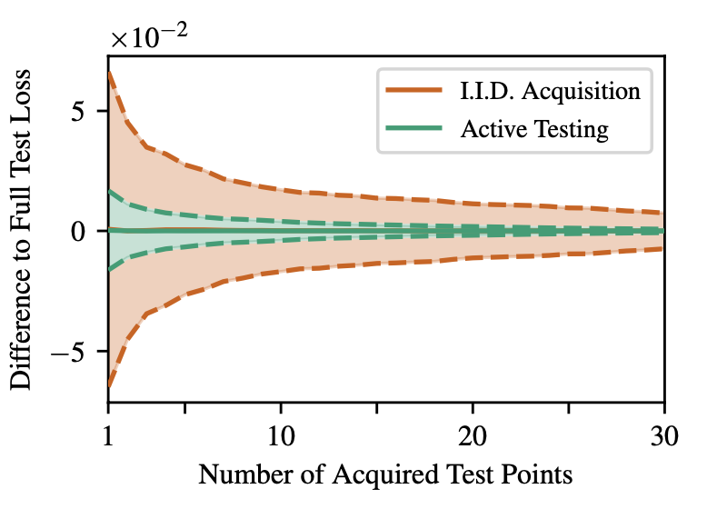
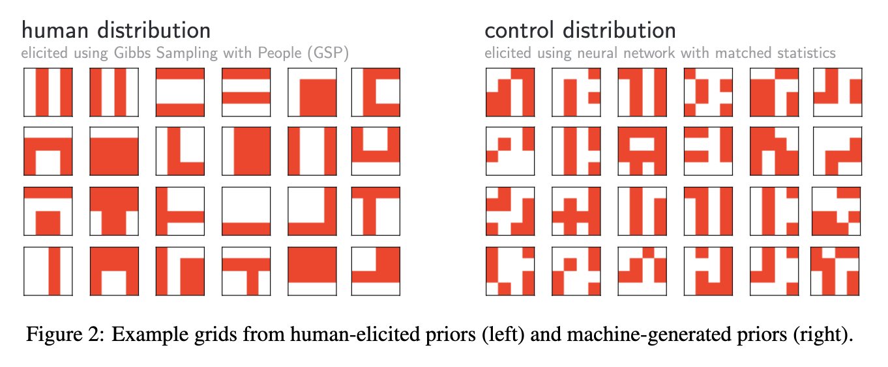

This is the Machine learning and Statistics Journal Club. We gather roughly every third week.

Abstract: We introduce a new framework for sample-efficient model evaluation that we call active testing. While approaches like active learning reduce the number of labels needed for model training, existing literature largely ignores the cost of labeling test data, typically unrealistically assuming large test sets for model evaluation. This creates a disconnect to real applications, where test labels are important and just as expensive, eg for optimizing hyperparameters. Active testing addresses this by carefully selecting the test points to label, ensuring model evaluation is sample-efficient. To this end, we derive theoretically-grounded and intuitive acquisition strategies that are specifically tailored to the goals of active testing, noting these are distinct to those of active learning. As actively selecting labels introduces a bias; we further show how to remove this bias while reducing the variance of the estimator at the same time. Active testing is easy to implement and can be applied to any supervised machine learning method. We demonstrate its effectiveness on models including WideResNets and Gaussian processes on datasets including Fashion-MNIST and CIFAR-100.
Presenter: Väinö Yrjänäinen

Abstract: Strong inductive biases give humans the ability to quickly learn to perform a variety of tasks. Although meta-learning is a method to endow neural networks with useful inductive biases, agents trained by meta-learning may sometimes acquire very different strategies from humans. We show that co-training these agents on predicting representations from natural language task descriptions and programs induced to generate such tasks guides them toward more human-like inductive biases. Human-generated language descriptions and program induction models that add new learned primitives both contain abstract concepts that can compress description length. Co-training on these representations result in more human-like behavior in downstream meta-reinforcement learning agents than less abstract controls (synthetic language descriptions, program induction without learned primitives), suggesting that the abstraction supported by these representations is key.
Presenter: Isac Boström